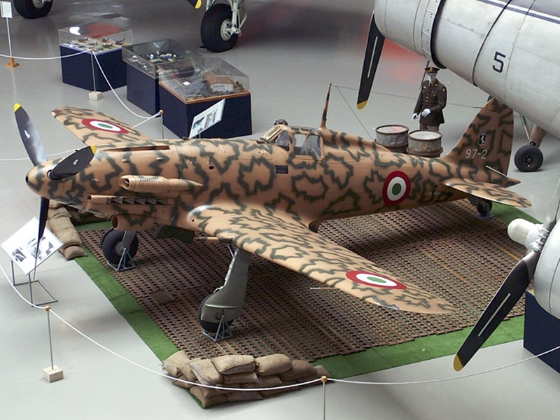

Il mito di Icaro
Fin dall’antichità l’uomo ha sognato di sollevarsi in volo, come mostra il mito di Icaro. Secondo la tradizione greca, egli tentò di fuggire dal labirinto di Creta con ali costruite dal padre Dedalo, ma avvicinandosi troppo al Sole la cera si sciolse provocandone la caduta. Il racconto simboleggia il desiderio umano di superare i propri limiti e, insieme, i pericoli legati alla mancanza di conoscenza e controllo, temi centrali nella storia dell’aviazione. L’evoluzione dell’aviazione a motore è partita negli inizi del 1900 come un esperimento cercando di creare un qualcosa di innovativo, oggi invece l’aviazione ci accompagna tutti i giorni, grazie a GPS, o semplicemente internet, infatti tutti questi strumenti sono gestiti e divulgati grazie ai satelliti, che sono frutto dell’evoluzione dell’aviazione.

I Fratelli Wright
I fratelli Wright non furono i primi a volare, ma infatti nel 1800 circa, ci furono altri innovatori che riuscirono nell’impresa, come George Cayley che riuscì ad alzarsi da terra con una specie di aereo non motorizzato (aliante), oppure Clement Ader che nel 1890 progetto Éole, un velivolo a vapore che pur non avendo fatto un volo controllato, dimostrò la fattibilità del volo a motore. Arrivato il 1900, più precisamente il 1903, i fratelli Wright riuscirono a volare, con un aereo motorizzato, per 37m in 12sec. Furono i primi nella storia ad effettuare un volo controllato con un aereo a motore.Più tardi nel 900 i fratelli Wright riuscirono a migliorare il loro progetto e effettuarono altri voli, e con quello del 1905 riuscirono a volare per ben 38km in 39min e nel 1908 fecero il primo volo con un passeggero.Le dimostrazioni del 1908 in Europa e negli Stati Uniti sancirono l’affermazione dell’aeroplano.

L'evoluzione dell'aviazione durante le guerre mondiali
Con la Prima guerra mondiale l’aeronautica assunse un ruolo esclusivamente militare. Gli aerei, inizialmente usati per osservazione, furono rapidamente armati e specializzati in caccia, bombardamento e supporto alle truppe. Il conflitto favorì innovazioni come il miglioramento dei profili alari, l’aumento della potenza dei motori, le mitragliatrici sincronizzate e l’uso sistematico degli strumenti di bordo. In questo periodo emersero costruttori come Junkers, che introdusse strutture interamente metalliche.
Nel periodo tra le due guerre l’aviazione visse una fase “eroica”, segnata da imprese individuali e voli record. In Italia ebbero particolare rilievo le trasvolate oceaniche e le crociere aeree, che unirono progresso tecnico e celebrazione nazionale. Con il tempo, però, l’aumento della complessità tecnologica portò al superamento del post-eroismo, sostituendo l’esaltazione del singolo con una visione più industriale e scientifica dell’aviazione.

Il ruolo delle donne durante le guerre mondiali
Il ruolo delle donne nei periodi di guerra in Italia è stato più significativo di quanto spesso emerga nei racconti tradizionali. Durante la Prima guerra mondiale, con molti uomini al fronte, numerose donne entrarono nel mondo del lavoro industriale e tecnico, compresi settori legati all’aeronautica nascente, come le officine meccaniche e la manutenzione dei velivoli. Anche se raramente visibili, queste attività erano indispensabili al funzionamento dell’apparato aereo. Tra le due guerre e durante la Seconda guerra mondiale, la presenza femminile in ambito aeronautico rimase marginale nei ruoli di combattimento, ma divenne importante in quelli tecnici, produttivi e organizzativi. In un’epoca dominata dal mito del pilota-eroe, il contributo delle donne fu poco celebrato, ma essenziale. Nel dopoguerra si affermò una dimensione “post-eroica”, in cui l’attenzione si spostò dall’impresa individuale alla competenza tecnica e alla ricostruzione: anche l’aeronautica iniziò lentamente a valorizzare il sapere professionale più della retorica bellica, aprendo nel tempo nuovi spazi alle donne. Questo tema emerge chiaramente nel film Porco Rosso di Hayao Miyazaki. Il protagonista rappresenta l’eroe disilluso della Grande Guerra, mentre Fio, giovane ingegnera aeronautica, incarna una visione post-eroica dell’aviazione: non la gloria del combattimento, ma il valore della progettazione, della tecnica e del lavoro collettivo, ambiti in cui il contributo femminile risulta centrale anche se spesso invisibile.

Motore a jet (reazione) e introduzione dell’aviazione civile
Il primo aereo con il motore a jet venne inventato dai tedeschi nel 1939 e fu il l’Heinkel He 178, l’invenzione di quest’ultimo segnò una grande svolta nel mondo del volo, perché questi motori risultavano più veloci ed efficienti rispetto ai vecchi motori ad elica. Questi motori iniziarono ad essere usati anche nell’aviazione civile che nel periodo dopo la seconda grande guerra era in grande sviluppo. I primi aerei civili a reazione furono il boeing 707 e il Douglas DC-8 (utilizzato all’inizio per operazioni militare ma poi convertito in velivolo civile. Grazie ai motori a reazione le rotte internazionali si espansero e aumentò in modo significativo il numero di passeggeri, aumentò anche la sicurezza dei voli grazie al progresso tecnologico e alla rigorosa manutenzione.
Superamento dei limiti della velocità
La barriera del suono fu rotta per la prima volta nel 1947 dall’aereo americano Bell X-1 pilotato da Chuck Yaeger. Cos’è la barriera (muro) del suono? Si parla di muro perché la resistenza dell’aria cresce sempre più con l’aumentare della velocità dell’aereo, e perciò diventa quasi un ostacolo fisico quando la velocità si avvicina alla soglia Mach 1, quando un velivolo abbatte il muro del suono si verifica il cosiddetto "boom sonico", il rumore generato dalle onde d’urto di un oggetto che viaggia a velocità superiore a quella del suono. Ad oggi l’aereo che ha raggiunto la più alta velocità e la più alta quota di sempre è il X-15 che raggiunse una velocità di 7274km/h ad una quota di oltre 100km ai limiti con lo spazio.